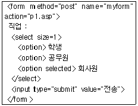
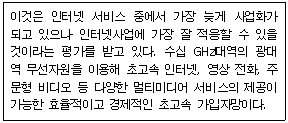
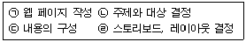
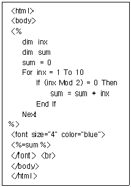
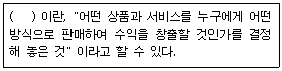
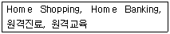
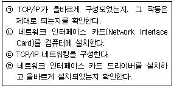

전자상거래운용사 (2003-07-20 기출문제)
1과목: 인터넷 일반
1. 스팸메일에 관한 다음 설명 중 옳지 않은 것은?
- 원하지도 요청하지도 않았는데 어쩔 수 없이 받는 불필요한 메일 전체를 말한다.
- 스팸 메일은 정크 메일(Junk Mail), 벌크 메일(Bulk Mail)이라고도 한다.
- 다량의 메일을 발송하여 시스템이나 네트워크를 마비시킬 정도로 심각하기도 하다.
- 스팸 메일을 이용하여 상용 프로그램을 복제하여 판매해도 된다.
(정답률: 알수없음)

2. 다음 중 웹에서 사용자의 입력을 웹서버로 전송하는 방식이 옳게 짝지어진 것은?
- GET - SET
- GET - POST
- POST - SET
- POST - SUBMIT
(정답률: 알수없음)
3. 다음 중 HR 태그를 사용할 때 적용되지 않는 속성은?
- SIZE
- WIDTH
- COLOR
- BORDER
(정답률: 알수없음)
4. 아래 ＜보기＞의 입력양식폼 구문에 대한 설명 중 옳지 않은 것은?

- 입력폼의 이름은 myform이다.
- 기본적으로 선택되어 보이는 직업은 학생이다.
- 선택가능 한 직업은 3가지이다.
- "전송"버튼을 누르면 다음에 수행되는 파일은 p1.asp이다.
(정답률: 알수없음)
5. 다음 중 외부로부터 자신의 정보를 보호하는 방법으로 적절하지 않은 것은?
- 중요한 내용의 파일인 경우 암호를 걸어둔다.
- 바이러스 백신을 설치하고 자동 업데이트 기능을 설정해 둔다.
- 인터넷으로 공유되어 있는 파일을 수시로 다운로드 받아 실행해 본다.
- 수상한 e-mail을 받은 경우 가능하면 열어보지 않는다.
(정답률: 알수없음)
6. 아래 ＜보기＞는 어떠한 인터넷 접속방식을 설명하고 있는가?

- ADSL
- ISDN
- Cable Modem
- BWLL
(정답률: 알수없음)
7. 다음 인터넷 서비스에 대한 설명 중 옳지 않은 것은?
- FTP 서비스는 인터넷을 통하여 파일을 주고 받기 위한 서비스이다.
- TELNET 서비스를 이용하여 원격지 컴퓨터에 접속할 수 있다.
- FTP 서비스는 익명으로 접속할 수 있다.
- TELNET 서비스는 익명으로 접속할 수 있다.
(정답률: 알수없음)
8. HTML 문서의 배경색을 파란색(BLUE)으로 지정하려고 할 경우에 ＜BODY＞ 태그의 형태로 올바른 것은?
- ＜BODY bgcolor="#ff0000"＞
- ＜BODY bgcolor="#00ff00"＞
- ＜BODY bgcolor="#0000ff"＞
- ＜BODY bgcolor="ff00ff"＞
(정답률: 알수없음)
9. 지적재산권이 있는 소프트웨어를 복사하여 판매하였을 경우, 다음 중 어떤 법에 저촉되는가?
- 컴퓨터프로그램보호법
- 개인정보보호법
- 사생활침해방지법
- 통신비밀보호법
(정답률: 알수없음)
10. 다음 중 일반적인 전자우편 네티켓으로 볼 수 없는 것은?
- 전자우편 내용은 짧고 간단하게 쓴다.
- 첨부파일은 꼭 필요한 경우에만 보낸다.
- 내용을 쉽게 알 수 있도록 적당한 제목을 붙인다.
- 보내는 사람이 누구인지는 개인정보 보호를 위해 정확히 밝히지 않아도 된다.
(정답률: 알수없음)
11. 다음 질의어 가운데 자연어 검색 방식은?
- 고려 AND 청자
- 고려 청자의 특징은?
- 고려 + 청자
- 고려청자*
(정답률: 알수없음)
12. 다음 중 메타 검색엔진에 대한 설명으로 가장 옳은 것은?
- 로봇 또는 스파이더라고 불리는 프로그램을 이용하여 인터넷상에서 정보를 검색하여 데이터베이스를 구축한다.
- 자체 데이터베이스를 갖고 있지 않으면서 사용자의 검색어를 다른 검색엔진으로 질의하여 결과를 보여준다.
- 검색 전문가들이 직접 인터넷상에서 웹 문서들을 검색하여 주제별, 계층별로 데이터베이스를 구축한다.
- 키워드 검색 기능과 주제별 디렉토리 서비스의 혼합된 기능을 제공하는 검색엔진이다
(정답률: 알수없음)
13. 다음 용어들에 대한 설명 중 옳지 않은 것은?
- WAP(Wireless Application Protocol)은 이동전화나 PDA 등에 적합한 인터넷 서비스를 제공하기 위해 공동으로 개발하고 있는 표준 프로토콜이다.
- TCP/IP는 Transmission Control Protocol/Internet Protocol의 약어로서 표준 통신규약을 말한다.
- HTML은 웹 페이지에서 데이터베이스처럼 구조화된 데이터를 지원할 수 있다.
- HTML의 여러가지 제약 때문에 XML이 등장하였다.
(정답률: 알수없음)
14. 다음 중 테이블에 있는 데이터를 가져오기 위해 사용하는 SQL 문은 무엇인가?
- SELECT
- INSERT
- UPDATE
- DELETE
(정답률: 알수없음)
15. 다음 중 플래시(Flash)에서 만들 수 없는 심볼(Symbol)은 무엇인가?
- 그래픽(Graphic) 심볼
- 무비클립(Movie Clip) 심볼
- 버튼(Button) 심볼
- 인스턴스(Instance) 심볼
(정답률: 알수없음)
16. 디지털 가입자 회선(DSL; Digital Subscriber Line)에 속하는 다음 방식들 중에서 실시간 비디오 또는 고화질의 동영상 전송을 위해 제안된 초고속 유선통신 규격으로 초당 10MB 이상의 빠른 전송 속도를 가지는 반면 전송 거리가 짧은 제약을 가지고 있는 기술은?
- ADSL (Asymmetric DSL)
- HDSL (High-Data Rate DSL)
- RADSL (Rate Adaptive DSL)
- VDSL (Very High Bit Rate DSL)
(정답률: 알수없음)
17. 아래 ＜보기＞는 웹페이지를 개발할 때 필요한 단계들이다. 그 순서가 가장 올바르게 나열된 것은?

- (ㄷ) →(ㄴ) →(ㄹ) →(ㄱ)
- (ㄴ) →(ㄷ) →(ㄹ) →(ㄱ)
- (ㄷ) →(ㄹ) →(ㄴ) →(ㄱ)
- (ㄹ) →(ㄷ) →(ㄴ) →(ㄱ)
(정답률: 알수없음)
18. 다음 스크립트 언어 중에서 클라이언트에서 수행될 수 있는 것은?
- ASP
- JSP
- PHP
- VB Script
(정답률: 알수없음)
19. 다음 중 자바스크립트에 대한 설명으로 틀린 것은?
- 자바스크립트로 만든 프로그램은 '＜SCRIPT＞...＜/SCRIPT＞' 태그를 이용해서 HTML 문서에 넣는다.
- 자바스크립트는 컴파일 과정을 거치지 않고 브라우저에서 직접 실행된다.
- 자바스크립트는 자료형 검사(Type Check)를 철저하게 한다.
- 현재 객체를 참조하기 위해서는 This 키워드를 사용한다.
(정답률: 알수없음)
20. 다음 중 아래 ＜보기＞의 ASP 문서 수행 결과로 옳은 것은?

- 25
- 30
- 55
- 128
(정답률: 알수없음)
2과목: 전자상거래 일반
21. 아래 ＜보기＞의 괄호 안에 들어갈 가장 적절한 용어는?

- 인터넷 마케팅
- 비즈니스 모델
- 전자상거래 유형
- 인터넷 프로모션
(정답률: 알수없음)
22. 더욱 좁게 정의된 고객집단 또는 시장을 뜻하며 대기업들이 소홀히 생각하는 소규모 시장으로 일반적으로 중소기업에게 알맞은 시장은?
- 대규모 시장
- 틈새시장
- 지역 시장
- 중소규모 시장
(정답률: 알수없음)
23. 전자화폐를 사용하는 경우의 장점과 가장 거리가 먼 것은?
- 화폐의 제작 비용을 줄일 수 있다.
- 현금 수송 및 보관비용을 줄일 수 있다.
- 필요한 금액만 사용하므로 잔돈을 거슬러 줄 필요가 없다.
- 일반적인 화폐에 비해 소액 결제가 용이하다.
(정답률: 알수없음)
24. 택배에 대한 다음 설명 중에서 가장 적절하지 않은 것은?
- 화주로부터 화물의 수송을 의뢰받아 화물의 접수로부터 포장, 수송, 배달 및 확인에 이르는 운송 서비스를 의미한다.
- 전국 모든 지역에 신속히 배달할 수 있는 수송체계가 중요하다.
- 전자상거래에서 배송 서비스를 향상시키기 위하여 택배서비스를 많이 이용하고 있다.
- 주요 거점 지역까지만 배달이 가능하고 일반 가정에까지는 배달이 되지 않는다는 단점이 있다.
(정답률: 알수없음)
25. 기업간 전자상거래(B to B)의 효과와 가장 거리가 먼 것은?
- 구매 및 조달 업무의 처리비용 절감
- 공급자 관리에 투입되는 인력의 최소화
- 주문, 선적, 결재의 처리시간 최소화
- 소비자관리 시스템을 통하여 소비자와의 유대 강화
(정답률: 알수없음)
26. 쇼핑몰 구축을 통해 많이 절감할 수 있는 비용항목으로 가장 적절한 것은?
- 하드웨어 및 소프트웨어 구매비
- 점포유지비, 인건비 등의 운영비
- 상품 구매비
- 물류비
(정답률: 알수없음)
27. 다음 중 인터넷 쇼핑몰 구축시 고려해야 할 사항으로 가장 거리가 먼 것은?
- 장바구니에 담긴 제품도 지불하기 전에 취소할 수 있도록 설계한다.
- 전체 구입품목에 대해서 일괄 결제할 수 있도록 설계한다.
- 장바구니에 담긴 제품과 전시된 제품을 다시 비교할 수 있도록 설계한다.
- 주문이 완료된 제품도 장바구니에 남아 있도록 설계한다.
(정답률: 알수없음)
28. 인터넷 마케팅을 위한 도메인명에 대한 설명으로 가장 옳지 않은 것은?
- 기억하기 좋은가, 입력하기 편리한가 등을 고려해야 한다.
- 사이트의 내용과 특성을 효과적으로 반영하는가를 고려해야 한다.
- 전 세계적인 범용 브랜드로서 자산가치를 창출하기도 한다.
- 전 세계적으로 가장 인지도가 높은 co.kr 도메인을 이용하는 것이 유리하다.
(정답률: 알수없음)
29. 인터넷 기술의 발전으로 전자상거래 웹사이트에서 고객들이 어떻게 행동하는지에 대한 흐름이 데이터로 남게 되는 데 이를 무엇이라 하는가?
- 웹체인 파일
- 로그 파일
- 온라인 데이터 파일
- CPM 파일
(정답률: 알수없음)
30. 다음 중 전자상거래에 관한 설명으로 가장 거리가 먼 것은?
- 정보의 전달, 상품과 서비스의 배달, 지불 등의 과정이 네트워크 상에서 전자적 처리 절차를 통해 이루어진다.
- 기존의 상거래와 업무처리 과정을 자동화하여 정확성과 신속성, 효율성을 높이는 기술 응용이다.
- 디지털 정보교환을 통해 생산자와 소비자가 연결되므로 중간 유통마진이 최소화 되는 중개인 제거(Disintermediation) 효과가 있다.
- 편리한 전자적 절차를 이용하므로 고객의 신뢰도가 매우 높아지는 특징이 있다.
(정답률: 알수없음)
31. 다음 중 ERP(전사적자원관리) 시스템 구축과 가장 거리가 먼 것은?
- 통합 데이터베이스의 구축 및 사용
- 업무 프로세스 개선
- 쇼핑몰 구축
- 기업활동 전반에 걸친 업무의 통합
(정답률: 알수없음)
32. 다음 중 무선인터넷을 이용한 전자상거래를 가능하게 하는 핵심기술은?
- WAN
- LAN
- WAP
- MPEG
(정답률: 알수없음)
33. 아래 ＜보기＞와 가장 관련이 깊은 전자상거래 유형은?

- B to B
- B to C
- B to G
- C to C
(정답률: 알수없음)
34. 일반적으로 기업에서는 체계적인 구매의사결정 절차를 거쳐 구매가 이루어지게 된다. 다음 중 기업의 구매의사결정 순서로 적절한 것은?
- 정보 수집→대안 평가→구매 의사 결정
- 구매 의사 결정→정보 수집→대안 평가
- 정보 수집→구매 의사 결정→대안 평가
- 대안 평가→정보 수집→ 구매 의사 결정
(정답률: 알수없음)
35. 다음은 일반 소비자의 구매형태와 기업의 구매형태를 비교한 것이다. 잘못 짝지어진 것은?(보기 순서는 비교기준, 일반소비자, 기업구매자 순입니다.)
- 구매 성향(비교기준), 개인 또는 주관적(일반소비자), 전문적 또는 객관적(기업구매자)
- 구매 단위(비교기준), 소량(일반소비자), 대량(기업구매자)
- 구매자 위치(비교기준), 지리적 집중(일반소비자), 지리적 분산(기업구매자)
- 구매자의 수(비교기준), 다수(일반소비자), 소수(기업구매자)
(정답률: 알수없음)
36. 전자상거래를 하는 소비자를 보호하기 위한 기업의 책임에 대한 다음 설명 중 옳지 않은 것은?
- 소비자에 대한 많은 개인정보를 확보하여 다양하게 활용한다.
- 웹사이트 등에 사업자의 주소 혹은 연락처를 명기한다.
- 전자서명, 암호화, 전자인증 등을 활용한다.
- 파손된 상품에 대하여 반품, 교환하는 등의 제도적 장치를 도입한다.
(정답률: 알수없음)
37. 수배송 시설을 공동으로 이용하는 공동 수?배송의 장점과 가장 거리가 먼 것은?
- 상품의 가치 상승한다.
- 배달기간이 단축된다.
- 물류비용이 절감된다.
- 화물의 손상이 감소된다.
(정답률: 알수없음)
38. 다음 중 e-SCM에 대한 설명으로 옳은 것은?
- 기업 내부의 물류문제를 효과적으로 관리하기 위한 경영 기법이다.
- 소비자의 구매 정보는 생산자를 통해 원재료 공급자에게 전달될 수 없다.
- 기업 간 물류업무 프로세스의 표준화가 선행되어야 한다.
- 고객 서비스는 향상되지만 재고 및 운영비용이 절감되는 것은 아니다.
(정답률: 알수없음)
39. 다음 중 전통적인 상거래와 비교하여 전자상거래의 특징으로 볼 수 없는 것은?
- 고객의 욕구를 신속하게 파악할 수 있다.
- 초기자본이 상대적으로 적게 든다.
- 글로벌 마케팅이 용이하다.
- 전시를 통한 판매가 일반적이다.
(정답률: 알수없음)
40. 인터넷의 광고 효과를 측정하기 위한 분석단위 중 특정한 페이지나 그림과 같은 광고 메시지가 사용자에게 노출되는 수를 종합한 개념을 나타내는 단위는?
- 방문수
- 방문자 수
- 체류시간
- 페이지뷰
(정답률: 알수없음)
3과목: 컴퓨터 및 통신 일반
41. 아래 ＜보기＞에서 TCP/IP 네트워크 환경을 설정하는 순서를 가장 올바르게 나열한 것은?

- (ㄴ)→(ㄹ)→(ㄷ)→(ㄱ)
- (ㄴ)→(ㄹ)→(ㄱ)→(ㄷ)
- (ㄹ)→(ㄴ)→(ㄷ)→(ㄱ)
- (ㄹ)→(ㄴ)→(ㄱ)→(ㄷ)
(정답률: 알수없음)
42. 다음 중 전자상거래 시스템의 기본 서버 구성요소와 가장 거리가 먼 것은?
- 전자상거래 시스템을 웹으로 접속할 수 있도록 하는 Web Server
- 상품데이터 및 각종 자료를 다운로드할 수 있는 FTP Server
- 다른 사용자의 이름이나 주소로 위치를 알아낼 수 있는 Directory Server
- 다양한 마케팅 또는 상품 및 상거래에 대한 질의/응답을 위한 Mail Server
(정답률: 알수없음)
43. WWW에서 하이퍼 텍스트 문서를 기반으로 정보를 주고받기 위한 기본적인 규약은 무엇인가?
- FTP
- HTTP
- TCP/IP
- DNS
(정답률: 알수없음)
44. 다음 중 사용자들이 웹에 접속할 때 제일 먼저 나타나거나 가장 많이 머무르는 사이트로, 웹 서핑을 시작하는 주요 사이트를 의미하는 것은 무엇인가?
- 포탈 (Portal)
- 보탈 (Vortal)
- 인터넷 폰
- 인터넷 방송
(정답률: 알수없음)
45. 클라이언트 측에서 요구하는 인터넷 서비스를 지원하기 위해 서버 시스템 측에서 클라이언트의 요구를 식별할 수 있어야 한다. 서버 측에서 FTP, HTTP 등과 같은 인터넷 서비스를 식별하는 데 사용하는 정보는?
- 서버 이름
- 인터넷 주소
- 프로그램 명
- 포트 번호
(정답률: 알수없음)
46. Visa와 Master Card사가 공동으로 개발한 전자상거래 지불 수단으로 SET 프로토콜이 있는데, SET가 사용하고 있는 암호화 기술의 명칭은?
- DES
- PGP
- RSA
- SEA
(정답률: 알수없음)
47. 바이러스에 관한 다음 설명 중 옳지 않은 것은?
- 최근 등장하여 많은 피해를 주고 있는 코드레드와 님다 바이러스는 모두 인터넷 웜의 일종이다.
- 부트 바이러스에 감염된 컴퓨터는 처음 전원을 켜서 운영체제를 부팅하는 단계에서 바이러스가 활동을 시작하며, 부트 바이러스에 감염된 디스켓을 통한 방법이 주된 유포 경로이다.
- 실행 파일 바이러스는 프로그램 파일에 바이러스가 첨부되며, 해당 프로그램이 실행될 때 바이러스가 활동을 시작한다.
- 바이러스가 첨부된 파일은 원래 파일 크기에 비해 항상 커지므로 이를 이용하여 바이러스 감염 여부를 판단할 수 있다.
(정답률: 알수없음)
48. 소규모 네트워크에서 데이터 및 장치들을 공유하기 위해 사용하는 프로토콜은?
- ARP
- ICMP
- TCP/IP
- NetBEUI
(정답률: 알수없음)
49. 다음 중 웹 서버로 사용할 수 없는 프로그램은?
- IIS
- PWS
- Apache
- Access
(정답률: 알수없음)
50. 다음 광케이블에 대한 설명 중 옳지 않은 것은?
- 광대역 전송으로 기가 bps급 전송이 가능하다.
- 가볍고 크기가 작아 이동성이 좋고 설치가 간편하다.
- 감쇠율이 적고 충격이나 잡음에 강하다.
- 디지털 신호 전송이 가능하지만 도청이 쉽게 가능하기 때문에 보안성이 낮다.
(정답률: 알수없음)
51. 전원이 공급되지 않아도 기억된 데이터가 지워지지 않으면서 DRAM과 같은 빠른 속도를 제공하는 메모리는?
- DDR(Double Data Rate) SDRAM
- SGRAM(Synchronous Graphic RAM)
- Flash Memory
- VRAM(Video RAM)
(정답률: 알수없음)
52. 1998년 Cult of Dead Cow라는 해커 그룹에서 만든 MS 윈도우용 트로이 목마 프로그램으로 원격 제어 기능을 제공하는 강력한 해킹 도구의 이름은 무엇인가?
- 백 오리피스
- 코드 레드
- 님다
- PC-Anywhere
(정답률: 알수없음)
53. 인터넷 프로토콜에 관한 설명으로 옳지 않은 것은?
- FTP : 컴퓨터에 자신의 계정 또는 익명(Anonymous)의 계정으로 원하는 파일을 송수신 할 때 사용하는 프로토콜이다.
- TELNET : 특정지역의 사용자가 원거리에 위치한 컴퓨터를 온라인으로 접속할 때 사용하는 프로토콜이다.
- POP3 : 인터넷상에 접속된 메일 서버 간에 전자우편을 주고받을 때 사용하는 프로토콜이다.
- VoIP(Voice over IP): 인터넷에서 데이터와 음성을 함께 전송할 때 사용하는 프로토콜이다.
(정답률: 알수없음)
54. 다음 중에서 토폴로지(Topology)에 관한 설명이 틀린 것을 고르시오.
- Star형 : 중앙집중식이며 중앙컴퓨터의 고장은 전체 네트워크를 마비시킨다.
- Ring형 : 고리형태로 연결된 구조로 한 컴퓨터의 고장은 전체 네트워크에 영향을 끼치지 않는다.
- Bus형 : 모든 컴퓨터들이 한 개의 회선에 연결된 구조로 한 컴퓨터의 고장은 전체 네트워크에 영향을 끼치지 않는다.
- Tree형 : 허브를 이용한 계층적 구조로 허브의 고장은 하위 네트워크를 마비시킨다
(정답률: 알수없음)
55. 차세대 인터넷주소체계인 IPv6에서 사용하는 IP주소의 길이는?
- 16 비트
- 32 비트
- 64 비트
- 128 비트
(정답률: 알수없음)
56. 다음 중 국내 도메인 이름과 IP 주소 등 인터넷 주소에 대한 정책을 개발하고, 인터넷 프로토콜 주소의 원활한 수급 및 할당 원칙에 대한 개선책을 개발하고 적용하는 기관은?
- 한국통신
- 인터넷서비스제공기관(ISP)
- 한국전산원
- 한국인터넷정보센터
(정답률: 알수없음)
57. 다음 중 컴퓨터에서 사용되는 하드웨어 장치의 측정단위를 옳게 설명한 것은?
- 개인용 컴퓨터의 CPU를 평가할 때 가장 많이 사용되는 속도 측정단위는 Byte이다.
- 프린터의 해상도를 나타내는 단위는 DPI(Dot Per Inch) 이다.
- RAM의 저장단위는Hz(헤르쯔)이다.
- LAN카드의 전송속도 단위는 RPM(Round Per Minute)이다.
(정답률: 알수없음)
58. ANSI가 규정한 것으로 컴퓨터에서 문자를 읽고 쓰기 위한 표준방식이며 알파벳, 숫자, 구두점, 기호 등의 문자를 8비트 코드로 정의한 방식은?
- EBCDIC
- ASCII
- Unicode
- Java Bytecode
(정답률: 알수없음)
59. 통신시스템 상에서 TCP/IP 네트워크를 모니터하고 관리하는 명령에 대한 설명으로 옳지 않은 것은?
- ping : 특정 호스트에 대한 도달 가능 여부를 판단하는데 사용한다.
- netstat : 로컬호스트와 관련된 네트워크 활동에 관한 통계를 반환한다.
- nslookup : 명시적으로 이름 변환 동작을 요구함으로써 도착지 호스트의 통신문제를 진단하는데 사용할 수 있다.
- ipconfig : ip주소, 서브넷 마스크와 기본 게이트웨이에 관한 정보를 얻을 수 있다.
(정답률: 알수없음)
60. 네트워크 어댑터 카드의 기능이 아닌 것은?
- 네트워크 케이블로부터 데이터를 수신할 준비를 한다.
- 다른 컴퓨터로 케이블을 통해 데이터를 전송한다.
- 트래픽 병목 현상을 제거하고, 각 포트 당 전송속도를 일정하게 보장한다.
- 케이블과 컴퓨터 사이의 데이터 흐름을 1차적으로 제어한다.
(정답률: 알수없음)